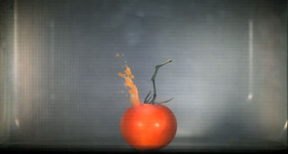
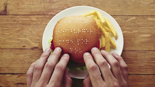
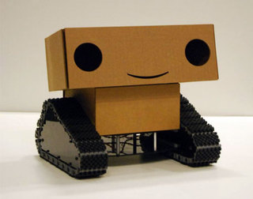
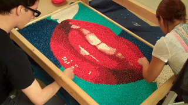
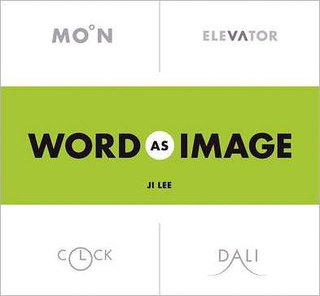
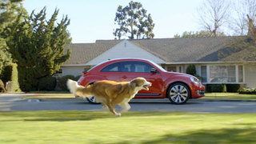
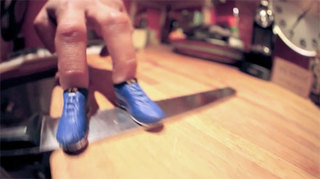
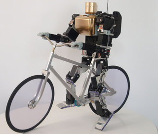

Fri, 24 Feb 2012 08:30:27 +0000
Brave: dos minutos del metraje de la próxima película de Pixar
Brave: dos minutos del metraje de la próxima película de Pixar
Ya falta menos para el estreno de Brave (en España “Indomable” y en Latinoamérica “Valiente”), la próxima película de Pixar que tendrá lugar el proximo 22 de Junio. Como ya te contamos hace un tiempo “Brave” es una historia ambientada en la Escocia medieval de los Highlands, en un ambiente de de batallas y leyendas, [...]
Ya falta menos para el estreno de Brave (en España “Indomable” y en Latinoamérica “Valiente”), la próxima película de Pixar que tendrá lugar el proximo 22 de Junio. Como ya te contamos hace un tiempo “Brave” es una historia ambientada en la Escocia medieval de los Highlands, en un ambiente de de batallas y leyendas, y cuenta la historia de Mérida la hija rebelde de un arquero. Se trata del primer protagonista femenino en una película de Pixar.
Thu, 09 Feb 2012 11:20:00 +0000
¿Qué pasa cuando le enseñas logos de marcas a un niño de 5 años?
¿Qué pasa cuando le enseñas logos de marcas a un niño de 5 años?
Adam Ladd es un diseñador gráfico especializado en imagen corporativa, y hace unas semanas pensó que sería divertido mostrar logos de marcas muy conocidas a su hija de 5 años, para que le dijera lo que veía. El resultado del experimento es bastante interesante y curioso, ya que podemos ver las marcas que conoce, las [...]
Adam Ladd es un diseñador gráfico especializado en imagen corporativa, y hace unas semanas pensó que sería divertido mostrar logos de marcas muy conocidas a su hija de 5 años, para que le dijera lo que veía. El resultado del experimento es bastante interesante y curioso, ya que podemos ver las marcas que conoce, las que no identifica pero le sugieren los valores de la marca a la que representan… o los que relaciona con objetos que el conoce pero no tienen nada que ver con las marcas.
Vía Kottke
Fri, 27 Jan 2012 00:27:55 +0000
El microondas lo arruina todo
El microondas lo arruina todo
Curiosísimo vídeo de diferentes objetos para nada apropiados para un microondas siendo sometidos a la torturas de las ondas electromagnéticas, para que tengas más claro el porqué no se deben meter en este electrodoméstico. Es una campaña de Moe’s Southwest Grill, una cadena de de restaurantes de comida Tex-Mex de Estados Unidos.
Curiosísimo vídeo de diferentes objetos para nada apropiados para un microondas siendo sometidos a la torturas de las ondas electromagnéticas, para que tengas más claro el porqué no se deben meter en este electrodoméstico. Es una campaña de Moe’s Southwest Grill, una cadena de de restaurantes de comida Tex-Mex de Estados Unidos.

Fri, 13 Jan 2012 10:32:37 +0000
Wimpy Braille Burgers
Wimpy Braille Burgers
Hay veces que las compañías realizan buenas acciones de marketing pero no las comunican bien. Este no ha sido el caso de Wimpy, una cadena de restaurantes de comida rápida que tiene una gran popularidad en Sudáfrica. Wimpy decidió sacar un versión en braille de su carta y para comunicarlo realizó una acción especial: cocinaron [...]
Hay veces que las compañías realizan buenas acciones de marketing pero no las comunican bien. Este no ha sido el caso de Wimpy, una cadena de restaurantes de comida rápida que tiene una gran popularidad en Sudáfrica. Wimpy decidió sacar un versión en braille de su carta y para comunicarlo realizó una acción especial: cocinaron unos panecillos especiales en los que, con ayuda de las semillas de sésamo”, escribieron un mensaje que decía “100 % carne de vacuno preparada para tí”, e invitaron a 15 invidentes a probarlas.

Como ellos mismos cuentan en el vídeo, fue un pequeño gesto, pero para las personas que utilizan sus manos como sus ojos fue algo muy especial, ya que por primera vez pudieron ver lo que comían. Y tanto les gustó que no dudaron en contarlo en las newsletter y otras publicaciones para personas con deficiencias visuales, de tal manera que el mensaje llegó a más de 800 mil personas.
Wed, 11 Jan 2012 12:15:15 +0000
El nuevo anuncio de Fabada Litoral (versión extendida)
El nuevo anuncio de Fabada Litoral (versión extendida)
Nuestros amigos de Tiempo BBDO Barcelona nos han adelantado la versión extendida (versión Internet) del último anuncio de Fabada Litoral que ya se está viendo por televisión estos días. El mítico personaje de la abuela que protagoniza estos anuncios se remonta a 1995 y ha sido interpretado por varias actrices diferentes. Cuando ya parecía que [...]
Nuestros amigos de Tiempo BBDO Barcelona nos han adelantado la versión extendida (versión Internet) del último anuncio de Fabada Litoral que ya se está viendo por televisión estos días. El mítico personaje de la abuela que protagoniza estos anuncios se remonta a 1995 y ha sido interpretado por varias actrices diferentes. Cuando ya parecía que no nos iban a sorprender, la abuela vuelve a la carga con referencias al mundo de los videojuegos más actuales, e incluso alguna saga de películas galáctica…
Mon, 26 Dec 2011 20:18:07 +0000
United State of Pop 2011 (World Go Boom), el Mashup del año
United State of Pop 2011 (World Go Boom), el Mashup del año
Como cada año por estas fechas DJ Earworm realiza un mix con los que a su juicio son los temas más importantes del año. El mashup de este año, bautizado como World Go Boom, recoge temas de Adele, Black Eyed Peas, Bruno Mars, Britney Spears, Cee Lo Green, Enrique Iglesias, Foster the People, Jennifer Lopez, [...]
Como cada año por estas fechas DJ Earworm realiza un mix con los que a su juicio son los temas más importantes del año. El mashup de este año, bautizado como World Go Boom, recoge temas de Adele, Black Eyed Peas, Bruno Mars, Britney Spears, Cee Lo Green, Enrique Iglesias, Foster the People, Jennifer Lopez, Jeremih feat. 50 cent, Katy Perry, Lady Gaga, LMFAO, Lupe Fiasco, Maroon 5, Nicki Minaj, OneRepublic, Pink, Pitbull y Rihanna.
Si te gusta lo puedes descargar en MP3 en la web de DJ Earworm
Mon, 19 Dec 2011 07:47:34 +0000
Google Zeitgeist 2011
Google Zeitgeist 2011
Como cada año por estas fechas, Google hace un resumen de lo que ha sido el año, basado en las búsquedas más populares, el conocido Google Zeitgeist. A nivel global el top 10 de búsquedas de este pasado año es: 1 Rebecca Black (una cantante de 13 años que lanzó en YouTube su single Friday) [...]
Como cada año por estas fechas, Google hace un resumen de lo que ha sido el año, basado en las búsquedas más populares, el conocido Google Zeitgeist.
A nivel global el top 10 de búsquedas de este pasado año es:
1 Rebecca Black (una cantante de 13 años que lanzó en YouTube su single Friday)
2 Google + (la red social de Goolgle)
3 Ryan Dunn (uno de los protagonistas de Jackass, que perdió la vida en un accidente)
4 Casey Anthony (condenada por el asesinato de su hijo de 2 años)
5 Battlefield 3 (la última entrega de este videojuego vendió 5 millones de copias en una semana)
6 iPhone 5 (el teléfono de Apple que no llegó a lanzarse, tuvimos que contentarnos con el 4S)
7 Adele (la cantante británica que ha barrido con su album “21″)
8 東京 電力 (Fukushima, el grave accidente en la central nuclear fue sin duda protagonista del año)
9 Steve Jobs (su muerte marcó sin duda el final de este año)
10 iPad 2 (lanzado en marzo el tablet de Apple ha sido el gadget más popular del año)
En España, las búsquedas más populares fueron
1 Facebook
2 Tuenti
3 Youtube
4 Hotmail
5 Marca
6 Google
7 Juegos
8 As
9 Tiempo
10 Traductor
Lo que nos lleva a pensar que en nuestro país Google se usa casi como un navegador, más que como un buscador.
Fri, 25 Nov 2011 20:32:01 +0000
Zelda Medley: aprovecha el poder de tus fans
Zelda Medley: aprovecha el poder de tus fans
Estos últimos días ha salido a la venta en todo el mundo el videojuego “The Legend of Zelda: Skyward Sword” para Wii, la última entrega de la saga del videojuego de Nintendo que comenzó en 1986… aquellos maravillosos años de los 8 bits. Por este motivo Devin Graham (aka Devin Supertramp), del que ya te [...]
Estos últimos días ha salido a la venta en todo el mundo el videojuego “The Legend of Zelda: Skyward Sword” para Wii, la última entrega de la saga del videojuego de Nintendo que comenzó en 1986… aquellos maravillosos años de los 8 bits. Por este motivo Devin Graham (aka Devin Supertramp), del que ya te hemos hablado alguna vez, y que se declara muy fanático del videojuego protagonizado por Link, pensó que sería muy buena idea hacer un vídeo con un montaje musical con los fragmentos de los temas musicales de Zelda.
Para ello contó con la ayuda de Lindsey Stirling, una pizpireta violinista muy popular también en YouTube, que compuso el popurrí que ha servido de fondo musical para este vídeo. ¿El resultado? el vídeo que ves sobre estas líneas ha conseguido en apenas una semana más de 600 mil visualizaciones, un 34% de las que acumula el primer trailer del videojuego en su presentación en el E3 a mediados del año pasado.
La canción la puedes comprar en iTunes
Vía Kotaku
Fri, 18 Nov 2011 07:34:00 +0000
Super Mario Beads 2
Super Mario Beads 2
Espectacular animación en stop-motion realizada por Marcus y Hannes Knutsson con figuras hechas con cuentas.
Espectacular animación en stop-motion realizada por Marcus y Hannes Knutsson con figuras hechas con cuentas.
Tue, 15 Nov 2011 07:10:24 +0000
Boxie: el robot que captura historias
Boxie: el robot que captura historias
Boxie es un bonito robot creado por Alexander Reben en el MIT Media Lab, como parte de su tesis. Se trata de un robot autónomo dotado de cámaras que interactúa con la gente para conseguir una misión: grabar un documental. Como el propio Alexander Reben reconoce, Boxie está insipirado en otros proyectos similares como Tweenbots [...]
Boxie es un bonito robot creado por Alexander Reben en el MIT Media Lab, como parte de su tesis. Se trata de un robot autónomo dotado de cámaras que interactúa con la gente para conseguir una misión: grabar un documental. Como el propio Alexander Reben reconoce, Boxie está insipirado en otros proyectos similares como Tweenbots (del que ya te hablamos) o Afghan Explorer, profundizando en el estudio de la interactividad entre robots y humanos.
Boxie se movía libremente por las instalaciones del MIT Media Lab interactuando con las personas que se encontraba a su paso, preguntándoles su nombre o por lo que hacían. El robot tiene dos botones (uno rojo y uno verde) para conseguir diferente información y respuestas. Cargado de una simple pero efectiva electrónica, el diseño final en plástico del tenía un aspecto poco amigable, por lo que Reben decidió volver al cartón de los prototipos para hacerlo más “simpático”.

Como pasaba con los Tweenbots, es muy curioso ver las reacciones de la gente ante un “pobrecito robot” que pide ayuda con voz lastimera.
Boxie protagoniza el último LabCast, el más que recomendable videopodcast del MIT Media Lab.
Fri, 04 Nov 2011 08:39:02 +0000
Un videoclip hecho con 280 mil caramelos
Un videoclip hecho con 280 mil caramelos
Espectacular trabajo de animación stop-motion realizado para el videoclip de la canción “In Your Arms” de Kina Grannis. Los datos son espectaculares: 280 mil caramelos, 1.357 horas de trabajo, para conseguir los 2.460 frames, y un equipo de 30 personas que durante 22 meses realizaron este precioso trabajo. El vídeo ha sido producido por @Radical.Media [...]
Espectacular trabajo de animación stop-motion realizado para el videoclip de la canción “In Your Arms” de Kina Grannis. Los datos son espectaculares: 280 mil caramelos, 1.357 horas de trabajo, para conseguir los 2.460 frames, y un equipo de 30 personas que durante 22 meses realizaron este precioso trabajo.
El vídeo ha sido producido por @Radical.Media y dirigido por Greg Jardin

No te pierdas el Making of
Vía Gizmodo
Fri, 28 Oct 2011 08:08:24 +0000
Smashing Pumpkins (calabazas rompiéndose en slow-motion)
Smashing Pumpkins (calabazas rompiéndose en slow-motion)
Muy apropiado para estas fechas este vídeo de calabazas de Halloween, rodado con una RED Epic a 300 fotogramas por segundo y luego re-ralentizado en post producción con Twixtor (un software del que ya te hemos hablado en alguno ocasión). Todo obra del más que recomendable Devin Graham (aka DavidSupertramp en YouTube), al que te [...]
Muy apropiado para estas fechas este vídeo de calabazas de Halloween, rodado con una RED Epic a 300 fotogramas por segundo y luego re-ralentizado en post producción con Twixtor (un software del que ya te hemos hablado en alguno ocasión). Todo obra del más que recomendable Devin Graham (aka DavidSupertramp en YouTube), al que te recomendamos que te suscribas.
La música es obra de Stephen Anderson, que según cuenta Devin Graham, la hizo en apenas 24 horas…
Vía Laughing Squid
Mon, 17 Oct 2011 17:12:23 +0000
Word as Image
Word as Image
Sobre estas líneas puedes ver el vídeo de promoción del libro “Word as Image” que acaba de salir a la venta. El libro es obra del coreano Ji Lee (@pleaseenjoy en Twitter), y plantea un reto, “crear una imagen de una palabra, usando las letras de la propia palabra” y una regla “usar sólo los [...]
Sobre estas líneas puedes ver el vídeo de promoción del libro “Word as Image” que acaba de salir a la venta. El libro es obra del coreano Ji Lee (@pleaseenjoy en Twitter), y plantea un reto, “crear una imagen de una palabra, usando las letras de la propia palabra” y una regla “usar sólo los elementos gráficos de las letras sin la adición de elementos externos“. Basado en las “Imágenes-palabra” de Ji Lee, Bran Dougherty Johnson (en Twitter @bran_dj) ha realizado esta animación que sirve de pieza promocional del vídeo e incluso abre una nueva dimensión a esta obra.
El libro se puede adquirir on-line a través de esta página (vía EE.UU.)

Por cierto , Ji Lee es Director Creativo en Facebook desde hace apenas unos meses. Como ves un gran fichaje.
Vía Wooster Collective
Wed, 22 Feb 2012 20:35:14 +0000
Probando Youzee en una Smart TV
Probando Youzee en una Smart TV
Hace unas semanas tuve la oportunidad de visitar la sede de Youzee para probar su aplicación para la Smart TV de Samsung, justo el día que empezó a estar disponible en Samsung Apps. Youzee, que aún sigue en beta, ya había anunciado en su presentación que estarían en todas las pantallas (ordenador, móvil y TV) [...]
Hace unas semanas tuve la oportunidad de visitar la sede de Youzee para probar su aplicación para la Smart TV de Samsung, justo el día que empezó a estar disponible en Samsung Apps. Youzee, que aún sigue en beta, ya había anunciado en su presentación que estarían en todas las pantallas (ordenador, móvil y TV) para su lanzamiento ya que lo consideraban fundamental para la comercialización de este producto que podríamos llamar el Spotify de los vídeos.
La aplicación es muy sencilla de usar, muy adecuada para su uso desde un mando a distancia: pocas opciones, menú muy claro y sencillo, y perfecta integración con la experiencia en las otras ventanas (ordenador y móvil). Así por ejemplo, uno de los temas quizás más complicados a priori, como podría ser el login (imagina meter tu correo electrónico y tu contraseña desde un teclado de un mando a distancia de un televisor) ha sido inteligentemente sustituido por una sincronización que se hace desde el ordenador (al tiempo que sirve para “cerrar” las ventanas desde las que tienes acceso a los contenidos).
Con esta aplicación, empieza a faltar menos para el lanzamiento definitivo de Youzee, que te recuerdo tendrá un precio de suscripción mensual de 6,99 €, que te dará acceso a películas y series dentro del catálogo de suscripción sin límite de títulos ni número de reproducciones. Fuera de este catálogo, habrá otros contenidos de pago individual en alquiler con precios que oscilarían entre los 2,99 y los 4,99 €
Youzee ha despertado bastante interés, y por todo lo que he podido probar en estos meses funciona muy bien. Lo único que falta saber para que realmente sea un triunfo, es el catálogo definitivo de películas y series, que al final es lo realmente importante. Esto no se sabrá hasta el momento de su lanzamiento definitivo que quizás sea sólo ya un tema de semanas
Wed, 01 Feb 2012 23:09:25 +0000
The Dog Strikes Back, el anuncio de Volkswagen para la Super Bowl
The Dog Strikes Back, el anuncio de Volkswagen para la Super Bowl
Como ya te contamos hace unos días, Volkswagen esta tratando de reeditar el éxito de su campaña del año pasado titulada The Force, que como recordarás protagonizaba un pequeño Darth Vader. Para el anuncio de este año, ya habían dejado claro con el teaser, que la cosa iba de perros, y la campaña lleva el [...]
Como ya te contamos hace unos días, Volkswagen esta tratando de reeditar el éxito de su campaña del año pasado titulada The Force, que como recordarás protagonizaba un pequeño Darth Vader.
Para el anuncio de este año, ya habían dejado claro con el teaser, que la cosa iba de perros, y la campaña lleva el título de The Dog Strikes Back. Ojito al final que hay sorpresas… Esta es la versión extendida del anuncio que se verá en EE.UU. durante la Super Bowl, este fin de semana.

Thu, 19 Jan 2012 16:05:46 +0000
The Bark Side, Volkswagen Strikes Back (el nuevo anuncio para la Super Bowl)
The Bark Side, Volkswagen Strikes Back (el nuevo anuncio para la Super Bowl)
Tras el enorme éxito de The Force, el anuncio que Volkswagen lanzó el año pasado en torno a la Super Bowl del año pasado (casi 50 millones de visualizaciones en YouTube), la marca alemana vuelve a la carga con una campaña de la que acaban de publicar el teaser, bajo el título de The Bark [...]
Tras el enorme éxito de The Force, el anuncio que Volkswagen lanzó el año pasado en torno a la Super Bowl del año pasado (casi 50 millones de visualizaciones en YouTube), la marca alemana vuelve a la carga con una campaña de la que acaban de publicar el teaser, bajo el título de The Bark Side.
Wed, 11 Jan 2012 16:45:07 +0000
The Joy of Books
The Joy of Books
Hace un tiempo te mostramos una divertida animación en stop-motion realizada por Sean Ohlenkamp y Lisa Blonder Ohlenkamp. Ahora esta divertida pareja ha ido aún más lejos y han realizado una nueva animación, esta vez en la librería Type de Toronto. Como ellos mismos cuentan, fueron largas noches de trabajo moviendo, apilando y animando libros. [...]
Hace un tiempo te mostramos una divertida animación en stop-motion realizada por Sean Ohlenkamp y Lisa Blonder Ohlenkamp. Ahora esta divertida pareja ha ido aún más lejos y han realizado una nueva animación, esta vez en la librería Type de Toronto. Como ellos mismos cuentan, fueron largas noches de trabajo moviendo, apilando y animando libros. Ahora bromean con que alguien les ayude para hacer lo mismo con la Biblioteca del Congreso para su próximo trabajo.
El resultado… bello, poético, espectacular… como un buen libro.

Tue, 27 Dec 2011 13:19:48 +0000
La niña que le pidió a Santa que su papá volviera de Iraq
La niña que le pidió a Santa que su papá volviera de Iraq
Como dice el presentador “los mejores regalos no tienen precio ni usan pilas“. Los estudiantes de segundo grado de Tar River Elementary en el condado de Franklin escribieron su carta a Santa Claus, y se vieron muy sorprendidos cuando recibieron la visita del propio Santa en persona, que les trajo todos los juguetes que habían [...]
Como dice el presentador “los mejores regalos no tienen precio ni usan pilas“. Los estudiantes de segundo grado de Tar River Elementary en el condado de Franklin escribieron su carta a Santa Claus, y se vieron muy sorprendidos cuando recibieron la visita del propio Santa en persona, que les trajo todos los juguetes que habían pedido. Todos menos Bethany Arnold, que no había querido pedir un juguete, si no que su padre volviera de Iraq para Navidad. El padre de Bethany, Wyndal Arnold trabaja en Iraq en obras de infraestructuras eléctricas, y apenas ha visto a su familia dos semanas en el último año. El final de la historia, la podrás ver si llegas al final del vídeo.
Preciosa pieza de Steve Hartman para la CBS News.
Otro vídeo de la misma noticia
Wed, 21 Dec 2011 22:13:39 +0000
Meme Proposal: la petición de mano más freaky de la historia
Meme Proposal: la petición de mano más freaky de la historia
Curiosa petición de matrimonio de Timothy Tiath a Audrey Ooi el pasado 31 de noviembre en Kuala Lumpur. Como verás en el vídeo, Timothy usó las clásicas imágenes de los memes de Internet para mostrar su amor por su chica y pronunciar el clásico… Will you marry me? Grabado con la complicidad de sus amigos [...]
Curiosa petición de matrimonio de Timothy Tiath a Audrey Ooi el pasado 31 de noviembre en Kuala Lumpur. Como verás en el vídeo, Timothy usó las clásicas imágenes de los memes de Internet para mostrar su amor por su chica y pronunciar el clásico… Will you marry me?
Grabado con la complicidad de sus amigos de Crazy Monkey Studio y perfectamente editado bajo los acordes de “A thousand Years” de Cristina Perri (de la banda sonora de Crespúsculo).
Tue, 29 Nov 2011 21:11:12 +0000
Little Printer: la impresora que sí querrás tener
Little Printer: la impresora que sí querrás tener
En estos tiempos digitales que corren es probable que quizás uses muy poco tu impresora o que ni siquiera tengas una en casa, aunque puede que alguno de vosotros sí que la utilice a diario. En cualquier caso las impresoras no se han terminado de adaptar bien a nuestras necesidades actuales, y no tanto por [...]
En estos tiempos digitales que corren es probable que quizás uses muy poco tu impresora o que ni siquiera tengas una en casa, aunque puede que alguno de vosotros sí que la utilice a diario. En cualquier caso las impresoras no se han terminado de adaptar bien a nuestras necesidades actuales, y no tanto por el papel, si no por la falta de adecuación del contenido al papel.
Este no es para nada el caso de la Little Printer, una impresora desarrollada por el estudio londinense Berg, a la que podríamos bautizar como “la primera impresora simpática y social de la historia”. Imprime en papel térmico, aquello que tu le mandes desde el móvil de manera inalámbrica mediante una app, para en papel tu agenda del día, tu lista de tareas, los restaurantes recomendados por tus amigos, un sodoku, las últimas noticias… como si fuera un miniperiódico personalizado. De momento ya tiene conectividad con Google (Calendar y tareas), Forsquare, The Guardian, y Nike.
“La Little Printer es un miembro de la familia o un colega más que una herramienta”, así la definen sus creadores en su post de presentación. Y es que además de los servicios que puedes incorporar a tu aplicación para móvil, es una red social, donde podrás qué han impreso tus amigos.
La impresora funciona de manera inalámbrica y sin ningún tipo de configuración, con tan solo conectar un pequeño dispositivo a nuestro router. Se crea así un entorno de comunicación entre dispositivos llamado BergCloud con el que se podría interactuar con otros gadgets en un futuro próximo. La Little Printer saldrá a la venta en 2012, aunque de momento se desconoce la fecha concreta y su precio.
Más info en BergCloud
(Vía el Facebook de Marta P )
Fri, 18 Nov 2011 19:10:46 +0000
Matthew Weathers: el profesor que todos querríamos tener
Matthew Weathers: el profesor que todos querríamos tener
No es la primera vez que te hablamos de Matthew Weathers un divertido un profesor de matemáticas de la Universidad de Biola, al que le encanta jugar con los diferentes elementos de sus clases haciendo las delicias de sus alumnos. La última vez fue ayer, en una clase en la que explicó a sus alumnos [...]
No es la primera vez que te hablamos de Matthew Weathers un divertido un profesor de matemáticas de la Universidad de Biola, al que le encanta jugar con los diferentes elementos de sus clases haciendo las delicias de sus alumnos. La última vez fue ayer, en una clase en la que explicó a sus alumnos los símbolos del Día de Acción de Gracias.
Wed, 16 Nov 2011 20:36:14 +0000
Primer trailer de ‘Brave’ la próxima película de Pixar
Primer trailer de ‘Brave’ la próxima película de Pixar
Se acaba de estrenar el primer trailer de “Brave” la nueva película de Pixar que verá la luz en junio 2012, que originalmente se iba a llamar “El oso y el arco” (The Bear and the Bow). Ambientada en la Escocia medieval de los Highlands, en un ambiente de de batallas y leyendas, “Brave” cuenta [...]
Se acaba de estrenar el primer trailer de “Brave” la nueva película de Pixar que verá la luz en junio 2012, que originalmente se iba a llamar “El oso y el arco” (The Bear and the Bow). Ambientada en la Escocia medieval de los Highlands, en un ambiente de de batallas y leyendas, “Brave” cuenta la historia de Mérida la hija rebelde de un arquero. Se trata del primer protagonista femenino en una película de Pixar, que aunque iba a ser dirigida también por una mujer (Brenda Chapman), fue finalmente Mark Andrews el responsable de la que será la décimotercera película de Pixar.
Wed, 09 Nov 2011 19:17:04 +0000
Mini Parkour
Mini Parkour
Espectacular vídeo realizado por el especialista Sticky (Johnny Budden), un especialista en Parkour y Free Running. Quizás sea un viral de la marca de zapatillas presente en el vídeo, aunque el cualquier caso es una pieza increíble. Vía Reddit
Espectacular vídeo realizado por el especialista Sticky (Johnny Budden), un especialista en Parkour y Free Running. Quizás sea un viral de la marca de zapatillas presente en el vídeo, aunque el cualquier caso es una pieza increíble.

Vía Reddit
Mon, 31 Oct 2011 10:15:50 +0000
Made in Iceland (haciendo realidad tus sueños)
Made in Iceland (haciendo realidad tus sueños)
Todo empezó con un vídeo, The Story of a Shipwrecked Rambler (La historia del excursionista náufrago), en la que Klara Harden pedía ayuda para hacer realidad un sueño: hacer una travesía por Islandia a pie en solitario, grabando un vídeo de lo que le aconteciera. Gracias a una web de crowdfunding Klara obtuvo ayuda para [...]
Todo empezó con un vídeo, The Story of a Shipwrecked Rambler (La historia del excursionista náufrago), en la que Klara Harden pedía ayuda para hacer realidad un sueño: hacer una travesía por Islandia a pie en solitario, grabando un vídeo de lo que le aconteciera. Gracias a una web de crowdfunding Klara obtuvo ayuda para su proyecto, tanto material como económica y este verano pasado se lanzó a la aventura.
Armada de una Canon 550D, unos cuantos objetivos, varias baterías y un trípode de carbono prestado, Klara Harden grabó un montón de material que ahora se ha convertido en Made in Iceland, un precioso documental sobre su aventura. El resultado es increíble, sobre todo teniendo en cuenta que ha sido ella misma quien ha grabado y transportado todo el equipo, y el montaje es genial, toda una invitación a recorrer Islandia.
Puedes ver las fotos del viaje en su cuenta de flickr
Tue, 25 Oct 2011 18:16:33 +0000
Un robot que anda en bicicleta
Un robot que anda en bicicleta
Impresionante robot que monta en bicicleta realizado por Dr. Guero. Como ves el robot no sólo anda en bici si no que es capaz de parar y volver a arrancar sin ningún problema, incluso frena echando los pies a tierra, casi como lo haría cualquier humano. Vía Slashdot
Impresionante robot que monta en bicicleta realizado por Dr. Guero. Como ves el robot no sólo anda en bici si no que es capaz de parar y volver a arrancar sin ningún problema, incluso frena echando los pies a tierra, casi como lo haría cualquier humano.

Vía Slashdot